Derivadas parciais
Caro(a) aluno(a), antes de executar esta atividade online estude o tópico “Derivadas parciais”. Utilize o fórum para discutir com seus colegas e tutores suas conclusões e dificuldades, e para auxiliar seus colegas.
A figura ao lado apresenta o gráfico da função 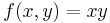 através de suas curvas de nível, ou seja, como se o estivessemos vendo de cima. Interpretaremos esta função como a área de um retângulo de lados x e y (dados em metros, por exemplo). O principal objetivo desta atividade online é explorar a diferença entre 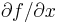 (derivada parcial) e 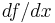 (derivada total).
Na figura há quatro pontos: A, B, C e D. O ponto A pode ser arrastado livremente (use o mouse), enquanto os pontos B e D só podem ser arrastados na horizontal e vertical, respectivamente. E o ponto C permanece sempre sobre a reta azul, cuja inclinação é dada por 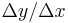. Experimente arrastá-los para entender melhor estas relações, e observe que ao passar o mouse sobre um ponto, suas coordenadas são exibidas, bem como o valor de 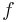 nele. O mesmo para 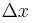 e 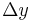.
Mas atenção: não confunda o retângulo de lados x e y, objeto do nosso estudo, com aquele de lados e , que aparece na figura.
O ponto A foi automaticamente posicionado em (3, 4/3), o que representa um retângulo de lados 3 m e 4/3 m. Sua área é, portanto, 4 m2. Pergunta: se aumentarmos o lado x do retângulo em meio metro, qual será o valor da área? Represente esta nova situação através do ponto B, arrastando-o para a direita de A de tal modo que 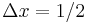 (não precisa ser exato). E verifique o valor de 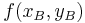, passando o mouse por cima de B.
Qual é a variação da área (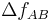) associada a esta variação do lado ()?
A resposta correta é ??. Correto. E qual é a taxa de variação média?
A resposta correta é ??. Correto. Este resultado significa que, em média, a área do retângulo varia ?? m2 para cada metro que acrescemos em x. Para entender isto, esqueça por um instante o que você usou há pouco e considere o seguinte problema:
A taxa de variação média de ao longo do eixo x é ?? m2/m. Qual é a variação em f quando x varia de 1/4 m?
Para responder esta pergunta você deve simplesmente multiplicar a taxa de variação de (vamos chamá-la de 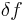, apenas para não confundir com ) pela variação de x (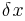):
o que resulta ?? m2/m. Verifique isto: arraste o ponto B para perto de A até que = 1/4, calcule a variação de e compare os resultados.
Em geral, a expressão acima funciona quando é pequeno, o que acarreta um pequeno. Neste caso, chamamos esses símbolos de diferenciais, pois eles representam uma pequena diferença. Mas à medida que aumentamos , torna-se mais e mais incorreto. Verifique se isto ocorre no caso acima, refazendo a conta acima para outros , e procure compreender o porquê.
Para continuarmos, o ponto B foi posicionado de modo que 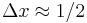. E vamos deixar as unidades de lado.
Agora vejamos: será que se aumentarmos o lado y em meio metro obteremos os mesmos resultados? Esta situação é representada pelo ponto D. Arraste-o até que = 1/2 e calcule:
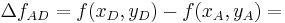
(1)
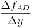
A resposta correta é ?? e ??, respectivamente. Correto. Ou seja, um acréscimo de igual medida no lado y acarreta uma variação maior da área do retângulo do que aquela obtida quando aumentamos x. Isto significa que a taxa de variação média da área é maior na direção do eixo y do que na do eixo x.
Mas cuidado, pois isto depende da configuração com que estamos trabalhando: o ponto A. Veja agora: o ponto A foi posicionado em (4/3, 3). Refaça a análise acima nesta situação e identifique em que direção a área varia mais rapidamente: em x ou em y?
Então, 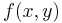 varia diferentemente ao longo de x e y. Dito de outra forma, a taxa de variação média de ao longo de x não é necessariamente igual àquela ao longo de y. E como você deve ter imaginado, podemos determinar a taxa de variação pontual de ao longo de x fazendo 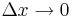. A este resultado chamamos derivada parcial de com relação a x, e a representamos por .
Faça isto empiricamente: arraste o ponto B para bem perto de A (utilize a ferramenta de zoom) e calcule:
Nesta equação, 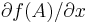 é a derivada parcial de com relação a x calculada no ponto A.
A resposta correta é 4/3. Correto. Mas como sabemos que , podemos também calcular através do cálculo diferencial: como mantivemos y constante (o ponto B só pode ser movido na horizontal), então qualquer ocorrência de y na expressão de comporta-se como uma constante. E deste modo,
Em A = (3, 4/3), a derivada parcial de com relação a x é simplesmente 4/3. Compare com o resultado obtido em (2).
Refaça a análise acima ao longo de y: arraste o ponto D para perto de A e determine 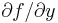 empiricamente. Depois, calcule a derivada parcial de com relação a y em A e compare os resultados.
Mas, e se modificarmos tanto x quanto y? Esta situação é representada pelo ponto C. Determine:
A resposta correta é ??. Correto. E qual seria a taxa de variação (média ou pontual)? Temos de dividir por ou por ? Na verdade podemos fazer ambos: se dividirmos por obteremos, no limite em que , a derivada total de com relação a x, representada por :
A resposta correta é ?? (a variação em x tende a zero?). Correto.
Analogamente, podemos calcular o limite de 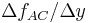:
A resposta correta é ?? (a variação em y tende a zero?). Correto.
Há ainda uma terceira opção: podemos dividir por 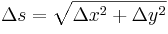, a distância entre os pontos A e C. Neste caso obteremos, no limite em que 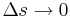, a derivada direcional de , representada por 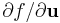, onde u é o versor (vetor de comprimento unitário) paralelo à reta azul (veja-o na figura). Mas nós não entraremos em detalhes sobre esta forma.
Muita atenção agora: é a derivada de com relação a x, quando y é independente de x (e, por isso, podemos mantê-lo constante ao variar x). Por outro lado, é a derivada de com relação a x quando y é dependente de x (e, por isso, não podemos mantê-lo constante ao variar x).
O ponto C representa esta dependência: você pode arrastá-lo, mas ele sempre permanecerá sobre a reta azul. Ou seja, se você o arrastar na horizontal (), inevitavelmente observará também um movimento vertical (). Esta relação entre x e y por ser descrita pela equação da reta: 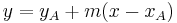, onde m é a inclinação da reta, dada por , o que equivale à derivada de y com relação a x no ponto A quando : dy/dx.
É claro que na prática utilizamos o cálculo diferencial para obter a derivada total:
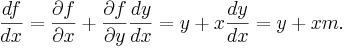
Faça a conta para 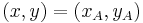 e compare com o resultado obtido em (4).
Para entender a expressão de acima, perceba que 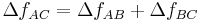 (atenção para os subscritos). Como vimos, podemos aproximar por
Expressão análoga pode ser obtida para 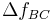, com a derivada agora calculada em B. Assim,
Dividindo por ,
e fazendo , obtemos:
Note que troquei 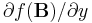 por 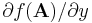, pois quando , o ponto B tende ao ponto A. E como A representa qualquer ponto no domínio de , podemos removê-lo da expressão acima, o que resulta na equação 8. Note também que a segunda parcela acima é simplesmente a regra da cadeia para 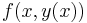, com y sendo uma função de x. Experimente fazer este desenvolvimento para 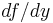.
A derivada total de com relação a y é similar [agora consideramos que x depende de y, ou seja, 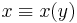]:
onde usamos 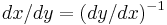. Faça suas contas e compare com o resultado empírico. Depois, discuta com seus colegas e tutores: se a relação entre x e y fosse não uma reta, mas y = x2, quais seriam e ?
Caso você tenha ficado curioso(a) quanto a derivada direcional, para
Arraste C para perto de A e determine a derivada direcional empiricamente, e use a expressão acima para comparar os resultados.
Para finalizar esta atividade online, perceba que a variação de entre A e C (equação 3) é ainda maior que aquela entre A e D (1). Ou seja, dependendo da direção em que andamos (no plano xy), varia mais ou menos.
Faça o seguinte: posicione A sobre uma curva de nível e, variando e para alterar a inclinação da reta azul, determine a direção em que 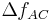 é máxima. Uma dica é pensar na distância necessária para alcançar a próxima curva de nível. A ideia é fixar (a variação de entre uma curva de nível e outra) e descobrir para qual direção é preciso andar menos para atingir esta variação em (imagine o gráfico de como sendo um morro no qual você quer subir). Em x (deslocamento ), em y () ou em uma combinação de ambos ()?
Ao determinar a direção, pressione o botão “adicionar indicador de direção”, à esquerda do plano cartesiano. O software colocará uma indicação dela em A. Depois, refaça este processo para outros cinco pontos, preferencialmente sobre as curvas de nível exibidas. Qual é a relação entre essas direções e as curvas de nível? Discuta suas conclusões e dificuldades com seus colegas e tutores.
obs.: você pode apagar os marcadores de direção. Basta arrastar o mouse em volta deles e pressionar o botão “remover indicador de direção”.